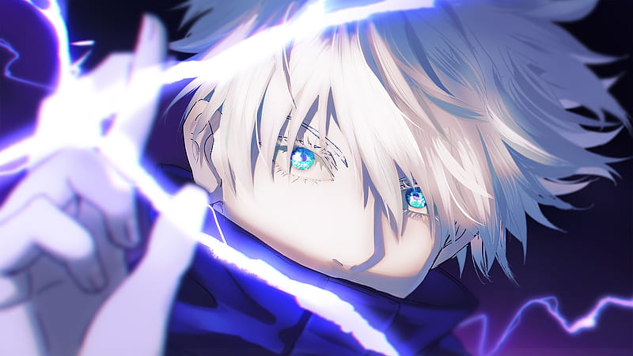

Favorite Anime Characters

Gojo Satoru
Gojo Satoru is one of the main characters from Jujutsu Kaisen and the strongest alongside Ryoumen Sukuna, the King of Curses. In this image, Gojo is using one of his abilities, called "Purple".
Some Popular Characters
- Kazuto Kirito - Sword Art Online
- Gon Freecss - Hunter X Hunter
- Edward Elric - Fullmetal Alchemist, Fullmetal Alchemist: Brotherhood